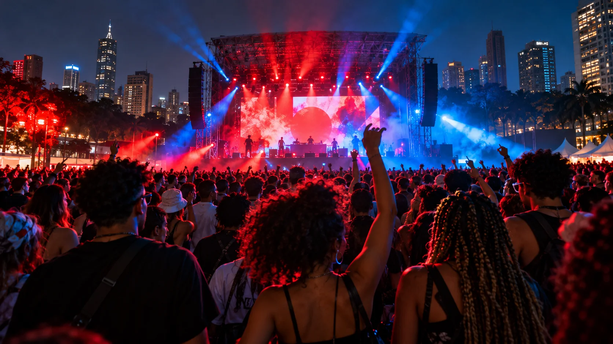
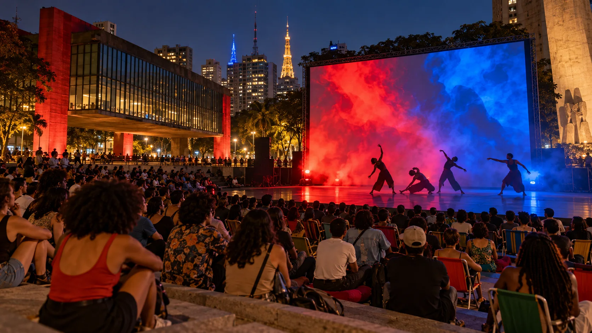
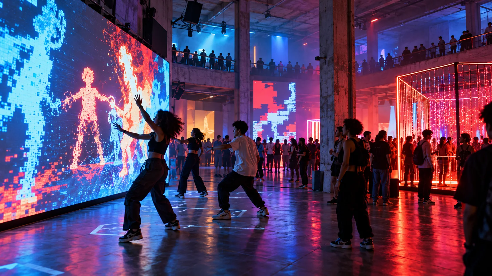
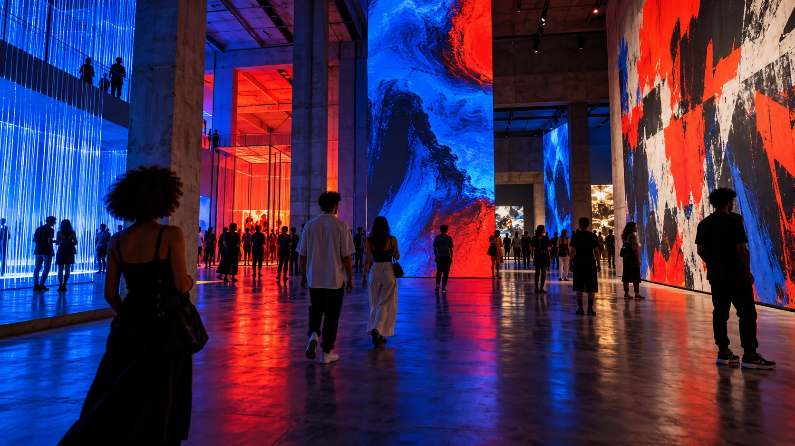

Grátis
Festival Cidade Viva
Parque Villa-LobosZona Oeste16h — 22h
Cultura acessível / São Paulo
Música, arte e cultura
acontecendo perto de você.

Overview / 001
São Paulo não para. O Pulso reúne o que vale viver — cultura gratuita, acessível e espalhada pela cidade.
Agenda / Outubro — Novembro

Grátis
R$ 15
GrátisNenhum evento encontrado neste pulso. Tente outro filtro.
A cidade como palco / 002
Visão geral
Da pista ao museu, da rua ao palco. O Pulso aproxima você das experiências que movimentam São Paulo.
Explorar por categoriaNo seu ritmo
Festival de música, gastronomia e arte urbana com entrada gratuita. Um sábado inteiro ocupando o centro de São Paulo.
Ver na agendaEncontre o seu rolê
Do seu lado
Agenda colaborativa
Conhece um show, exposição ou encontro que precisa circular? Cadastre aqui e mantenha a cidade em movimento.
Próximo pulso